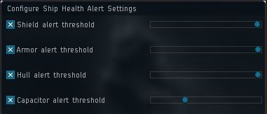
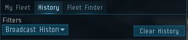
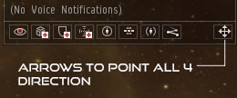
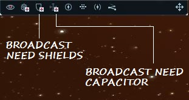

New Bro's Guide to Incursions
- Introduction
- Young Pilots
- General Settings
- Broadcast Settings
- Overview Settings
- Communications
- Fleet MOTD
- Watch List
- Drones
- Am I at the right gate?
- Rigs and Rig fitting
- Acronyms
- HQ Sites
Introduction
New to incursions Old toon or new toon? Well welcome to The Valhalla Project (TVP)! This guide is here to help you get setup for your first incursion site and to make sure that you have the information needed to be successful.
TVP's primary goal is to run safe and effective incursion fleets. Be warned incursions can be deadly to the uninitiated and unattentive.
So read all of this guide several times so you fully understand what you need to do. Every section of this guide contains important information that you need to understand and apply.
Failure to do so may result in the loss of your ship.
If you have questions after that ask in channel as many are willing to help.
New Pilots
It's a fact that Incursions are one of the most dangerous aspects of EVE game play. Our fleets may seem easy to fly in but that's due to over 2 years of refining fits, methods and tactics.
It is also a fact that it is quick and easy to skill up to fly a ship, but it's a whole different ball game to fly it well.
Why you ask? It's simple really, TVP policy is to run safe effective fleets, no FC wants to lose a ship on his watch. We need to know that pilots we invite to fleet have the minimum skills to fly as safe as possible while they train to be more effective.
General Settings
Turn off your CSPA-charge in the EVE-Mail settings (or set it to 0).
When taking aggro you will be broadcasting for shield and the logistics will be locking you up, having this setting you will not lock them or the NPCs that have locked you back. Set Auto Target Back to 0. You can find this option in your Escape Menu -> General Settings Tab -> Middle Column -> Inflight.

To make sure that your multi-billion ISK ship won’t be blown up by accepting a duel invitation by accident. You can find this option in your Escape menu -> General Settings Tab -> Dueling (bottom left hand corner) and make sure there is a cross in the box.
This will make it so that you cannot be concorded. (eg. shooting a fleet member is a concordable event.) You will want to have your safety set to green. You can do this by pressing on the Yellow, Red or Green dot at the top left of your capacitor (when undocked). Make sure the dot is Green!
For the instances that you have to look away from the screen for a second and the sansha decide to agress you. Having this alarm can bring your attention back to the screen and you can broadcast for shields. You can find this option in the bottom right of you capacitor.


Broadcast Settings
The most important thing you will have to do in an incursion site! We don’t want to see you blow up, just as much as you don’t want to see your pod floating in space with no home to go. Make sure you are in your fleet window. There are 4 easy steps to making sure your broadcasts are set up properly after you are in that window.
Go to the History tab and set the filter to ‘Broadcast History’.

Along the bottom of your fleet window there should be a row of square buttons with images of shields and the like. If there is not on the bottom right hand side there will be three arrows pointing up, press on them and the squares will appear.
After you have done Step 2, there will be some arrows in the bottom right hand corner, make sure there are 4 arrows pointing in all four directions (up, down, left and right). If they are not like this already, click on the arrows until it is.

Locate the ‘Broadcast: Need Shield’ (3rd from left) and ‘Broadcast: Need Capacitor’ (4th from left) buttons. They are found along the bottom of the fleet window. Become familiar with buttons as the FC will ask you for test broadcasts.

Overview Settings
To set your overview settings you can either create your own overview settings or just load the overview called "TVP OVERVIEW" in the >>>> Tvp Overview channel <<<<
Communications
Communication is at the core of how our fleets are run. The majority of orders given by the FC will be via voice commands. So if your not on our comms your stay in fleet will be very short lived.
We do not use the in game voice system so you will need setup the following software out of game.
We use Team Speak for our voice communication.
You can download it at the link below.
A setup guide can be found here
We DO NOT publish our server details as we have several, so please do not ask for them in TVP Public.
Teamspeak server details will be in the fleet MOTD when you get an invite. Your in game toon name must be a component of your TS name. Although not a requirement a microphone is highly recommended.
Fleet MOTD
MOTD or Message Of The Day is your key source of fleet information.
The MOTD contains comms details, location of the fleet and who is performing the fleet roles. So read it before asking a question!
Watch List
Depending on your role in fleet there will be fleet members you will need to keep an eye on. Not easy when there are fourty pilots in fleet.
The Watch List can have upto fifteen pilots in order to keep track of their status or perform quick actions like orbiting, keep at range or drone assist for example.
To add a pilot right click their name, then fleet option and finally add to watch list.
The Watch List then appears as a seperate window on your screen. In a basic form a Sniper pilot would have the AAA and DDD watch Listed. A DPS pilot may have the Vindi anchour (VVV) added. Logistics pilots would have all the fleet roles and other Logistics watch listed along with potential newbros or high-aggro pilots.
Drones
We need your drones set to PASSIVE. They must not be agressing targets not explicitly called
We have three drone bunny roles in our fleets the DDD, HHH and the SSS.
The DDD is the pilot that you will assist your light drones to, right click Combat drones "in Space" select Assist, Watch List then DDD pilots name. If you are carrying heavy drones you will use the same method to assign your drones to the HHH. Snipers will assist their mobile drones to the SSS.

DON'T forget to collect them before leaving a room or a site.
Am I at the right gate
Basically as a pilot you are responsible to make sure you are at the correct gate when linking up with fleet.
You get lots of information to check where you are. The pop up when you warp to a site, fleet history etc
Just remember Leroying into the wrong site invalidates your insurance!
So warp to your Squad comander (Rememer Logi Squad Commander could be a Off Grid Booster) then warp to another Squad Commander. If you get "Natural Phenomenon prevents Warp" you are at the right gate. Then D scan for wrecks or fleet buddies and ask FC if gate is Green
If not sure ask on comms for a "warp to" broadcast and check fleet history .... simple.
Acronyms Commonly Used
These will be found in the Fleet MOTD.
This is the Logistics and sniper/long range DPS anchor. They will lead the snipers and logistics pilots to the anchoring positions.
This is the short range DPS anchor. They will attempt to place the short range DPS(missile boats are considered in this category) in optimal range for Vindicator guns & webs.
This acronym represents the Light Drone Bunny. This is the individual that you will be Assisting your drones to.This member of the fleet is usually a Vindicator and is responsible for handling frigates and some cruisers.
This acronym represents the Heavy Drone Bunny. This is the individual that you will be Assisting your drones to.This member of the fleet is usually a Vindicator and is responsible for handling frigates and some cruisers.
This is new due to changes in drone assist mechanics (limited to 50 drones to assist pilots). So don't be surprised if you see a DDD2 or HHH2 in fleet MOTD the FC will assign squads to each as needed.
This acronym represents the Sniper Drone Bunny. This is the individual that you will be Assisting your drones to if you are a sniper.This member of the fleet is usually a Vindicator and is responsible for handling frigates and some cruisers.
This is new due to changes in drone assist mechanics (limited to 50 drones to assist pilots). So don't be surprised if you see a DDD2 or HHH2 or a SSS in fleet MOTD the FC will assign squads to each as needed.
This role is performed by either one or two machariel pilots in the TCRC site. They are responsible for moving an object called the Concord MTAC from the MTAC Factory to the Shield Transfer Control Tower which appear as containers on the overview. If you’re wanting to learn how to MTAC (almost a requirement for Machariel pilots) see the link below.
How to MTAC
This person is the person who runs the fleet!
The Logistics Commander role is look after all things logistcs and keep the Fleet Commander (FC) updated.
HQ Sites
This is the easiest, but longest site we run in HQs. It consists of three rooms, which you have to burn through, however it also has a time where fleet members can take a break as there is a tower bash at the end of the site.
The Tower is the objective of the site and we also have to destroy all of the NPCs in the room before we are able to kill the tower so there is very little risk involved in going AFK at this time.
This is the only site that we run and kill all of the rats in the room. This sites objective is to kill all rats, we do not have to kill any tower, which also makes it unique compared to the TPPH and TCRC which we run on a regular basis.
The last wave of this site can be very dangerous as it can have up to 3 Outuni Messen class ships which neut ships out completely. The last wave also has an extreme amount of alpha (instant damage) which means people have to be on their toes, even after the aggro settles the first time, there is a hard switch.
This site is the hardest site you will run in incursions. There is a lot of alpha and neuting power at the beginning of one of these sites. Along with 2 Outuni Messens there are also Deltole Tegmentum’s which do slight neuting but also put out the most DPS out of any of the Sansha rats you find in HQ Incursions.
The entry to this site can be shaky for logi’s as there are a lot of people taking damage within seconds of entering. The objective in this site is to destroy the tower located directly in front of your warp in point. We do however leave this site (after payment of course) with rats on the field.
Because of this reason, once the scrams are clear the FC will ask DPS and Snipers to warp off to the broadcast and the Logi pilots will stay behind with the FC and will be warped off by said FC when he/she is confident that there are no other fleet members left on grid.
This site is one that many people hate as it ends the incursion as is and will cause us to move systems.
The MOM is difficult in only 2 ways:
Bomber spawns which have the ability to alpha logi ships off the grid (in the case of a bomber spawn and you are targetted make sure to broadcast twice for shield).
Also the ECM Burst which causes the fleet to temporarily lose targets (its okay! if you’re taking damage when this happens just broadcast for shield again and you will be fine).